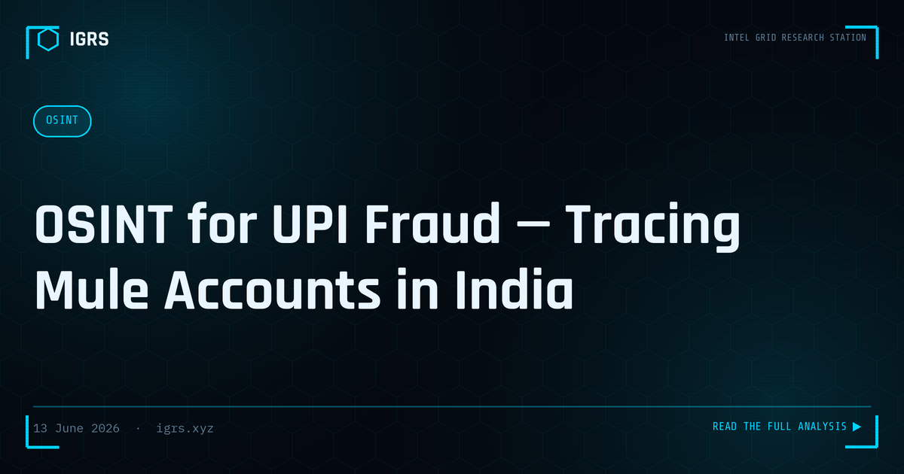

OSINT for UPI Fraud — Tracing Mule Accounts in India
Mule accounts are the lifeblood of UPI fraud operations. Every major cybercrime ring in India — from digital arrest scams to investment fraud to OTP phishing — routes proceeds through a chain of mule bank accounts before the money reaches the organizers. Understanding how to trace these accounts using OSINT is one of the most valuable skills an Indian cybercrime investigator can develop.
What is a Mule Account?
A mule account is a bank account opened legitimately (with valid KYC documents) but used by fraudsters to receive and forward criminal proceeds. Mules are typically recruited through job fraud — they are told they will earn commission for "receiving and forwarding payments" for a foreign company. They rarely know they are participating in money laundering.
The Mule Account Ecosystem
- Layer 1 (Collector): First account to receive victim's payment. Usually a new account opened specifically for the fraud.
- Layer 2 (Buffer): Multiple accounts that receive fragmented transfers from Layer 1. Used to confuse tracing.
- Layer 3 (Cashout): Final accounts from which cash is withdrawn or crypto is purchased.
OSINT Methodology — Step by Step
Phase 1: UPI VPA Analysis
Every UPI transaction contains a VPA (Virtual Payment Address) in format name@bank. This is your starting point.
- VPA format reveals the bank:
@oksbi= SBI,@okaxis= Axis,@ybl= Yes Bank (PhonePe),@ibl= ICICI (PhonePe),@paytm= Paytm - Username portion often contains real name or phone number — use for identity correlation
- Search VPA on Google — fraud databases like cybercrime.gov.in complaints sometimes mention VPAs publicly
- Check VPA against known fraud databases: rbi.org.in mule account list
Phase 2: Phone Number Intelligence
- Truecaller: Reveal registered name — compare with bank account name
- TAFCOP: Check how many SIMs on the linked Aadhaar — multiple SIMs = SIM farm indicator
- Google search: Phone number in quotes — check if it appears in job fraud ads, scam reports
- WhatsApp: Profile picture, status, last seen — behavioral intelligence
- Telegram: Search phone number — many mule recruiters use Telegram
- Social media: Search phone on Facebook, Instagram — mules often use personal phones
Phase 3: Bank Account OSINT
- Account number + IFSC → identifies exact branch → CDR + CCTV subpoena to that branch
- Account opening date — accounts opened within 30 days of fraud = likely purpose-built mule
- KYC documents — request from bank under Section 91 BNSS — reveals real identity of mule
- Transaction velocity — 50+ transactions in 24 hours = strong mule indicator
Phase 4: Social Media Correlation
- Search mule's name + location on LinkedIn — employment history often reveals fraud ring recruitment pathway
- Facebook job groups — search for posts like "earn ₹5000 per day — just receive payments" — these are mule recruitment ads
- Instagram/Facebook — profile often contains location, workplace, connections
- Reverse image search profile photo — find duplicate profiles used for fraud
Phase 5: Money Trail Reconstruction
- Map the full transaction chain: Victim → Mule 1 → Mule 2 → Mule 3 → Cashout
- Each hop requires a separate Section 91 BNSS notice to the respective bank
- UPI transactions have a 30-minute window before settlement — freezing in this window recovers funds
- After settlement, recovery requires coordination with the beneficiary bank's cyber nodal officer
Tools for Mule Account Investigation
| Tool | Purpose | Access |
|---|---|---|
| Truecaller | Phone number identity | Free / Pro |
| TAFCOP | SIM card count on Aadhaar | Free |
| cybercrime.gov.in | Suspect database lookup | LEA login |
| I4C Citizen Financial Cyber Frauds | Account freeze request | LEA |
| Maltego | Link analysis, entity mapping | Commercial |
| IGRS Dashboard | Unified lookup tool | Free — igrs.xyz/dashboard.html |
Building the Charge Sheet
For successful prosecution of mule account operators:
- Prove knowledge — show the mule received instructions to forward money to specific accounts
- WhatsApp conversations with recruiter = mens rea evidence
- Multiple transactions in short period = pattern of criminal conduct
- Sections: BNS S.318, IT Act S.66C/66D, PMLA S.3/4 (for the ring organizer)